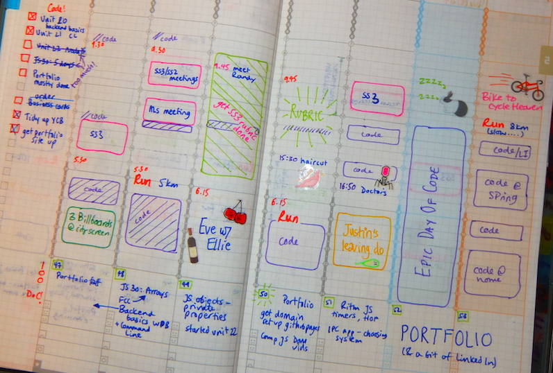

At the end of November 2017 I opened Codecademy for the first time in years and started the Learn HTML course. Then I rattled through the Learn CSS one. And then I wasn't really sure what to do. I was enjoying coding, but it wasn't really becoming a habit, and I didn't really know what to learn or what plans to make. Becoming a web developer is a pretty daunting task these days (why oh why didn't I do this years ago?!), so it was pretty clear that I needed to sort out my approach to learn enough.
After a lot of internet browsing/productive procrastination I stumbled across the #100DaysofCode challenge, started by Alexander Kallaway. The challenge rules are set out in his Medium post Join the #100DaysofCode. TL;DR? It's as simple as the name suggests; code for at least an hour a day for 100 days. Easy, right? Seemed to be the sort of structure-but-not-too-much-structure that might give my coding a kick in the right direction.
So on the 3rd of January this year, I jumped in and started my #100DaysofCode challenge. However, because I like to be contrary, I've interpreted it a bit differently to Alex's rules for himself.
- Alex defines coding strictly as working on projects. Seeing as I was starting almost from the beginning, I've defined coding as doing tutorials or coding courses, reading about coding, doing FreeCodeCamp challenges, and pretty much anything else that could loosely come under the coding umbrella.
- I'm not bothered about tweeting about the challenge. I like to see other people's updates, but for me Twitter has been just an input so far.
Fast forward! It's now the 26th of February, and I've made it to day 54 of the challenge. Whoop! I deserve a nice milk stout, and a couple of digestive biscuits to dunk (it works, don't give me that look!). Time to take stock.
courses & challenges completed
- Web Developer Bootcamp: 20/39 units completed - all of the front end content
- Complete JavaScript: basic js & DOM manipulation units
- Codecademy courses: Make a Website, Introduction to jQuery, most of Introduction to JavaScript
- FreeCodeCamp challenges: up to the end of JavaScript
projects
- this portfolio site - please take a look around!
- what the hex? game
- concept & landing page for York Craft Beer
- concept & landing page for CodeMates
good bits
Overall, I'm pretty pleased with how it's gone so far. I usually find it hard to stick with goals for long - Duolingo generally fizzles out after a couple of weeks, and I haven't been to the gym in ages. The #100DaysofCode has been different though, and coding has definitely become a habit - before work, at lunchtime, in the evening and at least one full day at the weekend. I've only had one day that I didn't 'count' (I still managed about 30 minutes that day though, and I even managed to fit in some studying on a couple of weekends away. Recording sessions in my diary has been really motivating, maybe as it's so visual. More likely to be the stickers though.
I'm also rather amazed by the progress I've made, even over just the last few weeks. I've started using the command line, git & github, put my project site up on the internet, made a simple game, and reworked some of my earlier projects with my updated skills. I'm really proud of what I've done, but I'm also looking forward to going back to them at the end of the challenge and upgrading them all.
not so good bits
I can happily spend the whole weekend coding, but this eat/sleep/code/repeat routine isn't going to be sustainable long term. I need to remember to go and do other things too - go for a run, go to the cinema, see some actual humans!
I've seen that studying with courses isn't enough, and I need a lot more practice to get to grips with the material. It's difficult to do that all in my own projects though - maybe algorithm challenges and figuring out how to create something before watching the code-along will help.
goals for the next 50 days
- start building a community - go to meetups and start using Twitter more fully
- explore the job market at Leeds Digital Jobs Fair and use it to plan future steps
- complete the Web Developer Bootcamp and Complete JavaScript courses (but not jsut for the sake of it - it's ok to slow down and spend more time on getting the fundamentals down)
- add some functionality to the York Craft Beer and CodeMates sites. Not a smart goal, but the next steps are still very much an unknown unknown.
That's it for the half-time punditry. I'll be back at full-time with another round up.